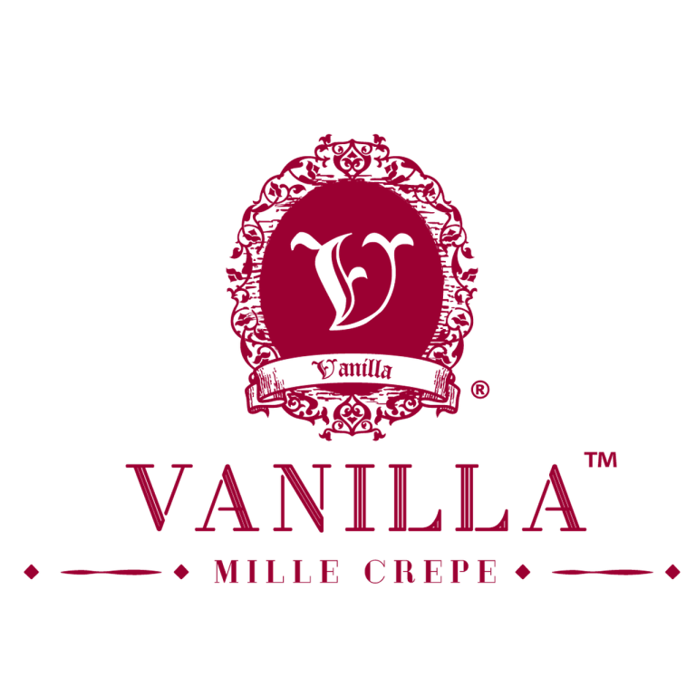

Philip Mckinney es el director ejecutivo y cofundador de Vanilla Mille Crepe, una empresa que se ha convertido en un referente en la industria gastronómica gracias a su especialidad en la elaboración de deliciosos pasteles de crepe. Además de su rol como director ejecutivo, también se desempeña como director de la cocina de Vanilla Mille Crepe Kitchen, donde lidera a un equipo de chefs expertos en la creación de los mejores pasteles de crepe del mercado.
Con más de 20 años de experiencia en la industria de las franquicias, Philip Mckinney ha demostrado ser un líder visionario y un experto en la expansión de negocios exitosos. Su carrera en el sector de las franquicias ha sido impresionante, habiendo participado en la creación y el desarrollo de algunas de las marcas más reconocidas y exitosas de la industria.
Su conocimiento profundo del mercado y su capacidad para identificar oportunidades han sido claves en su éxito como empresario.
En definitiva, Philip es una figura influyente en la industria de las franquicias, cuya experiencia y liderazgo han sido fundamentales para el éxito de Vanilla Mille Crepe y de otras marcas de la industria..
Intereses personales
Philip McKinney es un destacado empresario con una amplia trayectoria en el mundo de los negocios. Además de ser un exitoso emprendedor, también es conocido por su dedicación a la comunidad empresarial local, como lo demuestra su participación activa en varias asociaciones de empresarios.
Entre sus múltiples logros se encuentran la creación y desarrollo de varias marcas exitosas en distintas industrias. Desde una temprana edad, McKinney se interesó por el mundo de los negocios y comenzó a desarrollar su visión empresarial. A través de años de trabajo duro y determinación, logró convertirse en uno de los empresarios más exitosos de la región.
Como miembro activo de varias asociaciones de empresarios, McKinney se dedica a apoyar y fomentar el crecimiento de la comunidad empresarial local. Ha participado en distintas iniciativas y proyectos que han tenido un impacto positivo en la economía local y ha sido un mentor y modelo a seguir para otros empresarios jóvenes.
En resumen, Philip McKinney es una persona eminente y altamente respetada en la comunidad empresarial local. Su visión, dedicación y compromiso con la excelencia han sido fundamentales para su éxito como empresario y su impacto en la economía local.
Logros
Ha demostrado ser un empresario excepcional con múltiples logros y reconocimientos en su carrera. Entre ellos, ha recibido varios premios importantes que lo destacan como uno de los jóvenes emprendedores más influyentes de su generación. En 2019, fue honrado con el reconocimiento como uno de los 100 jóvenes emprendedores más influyentes del año. Además, en el mismo año, recibió el premio a la mejor marca en los Brandlaureate Awards, lo que representa un logro destacado en el campo del marketing y la marca en su industria.
En septiembre de 2020, estableció un nuevo récord en la industria de la pastelería, al conseguir el Libro de récords de Malasia por tener la cadena Mille Crepe más grande del país con la mayor cantidad de puntos de venta en todo el país. Este hito se logró gracias a su habilidad para desarrollar una estrategia de expansión exitosa y su capacidad para liderar y gestionar un equipo de profesionales dedicados en cada punto de venta.